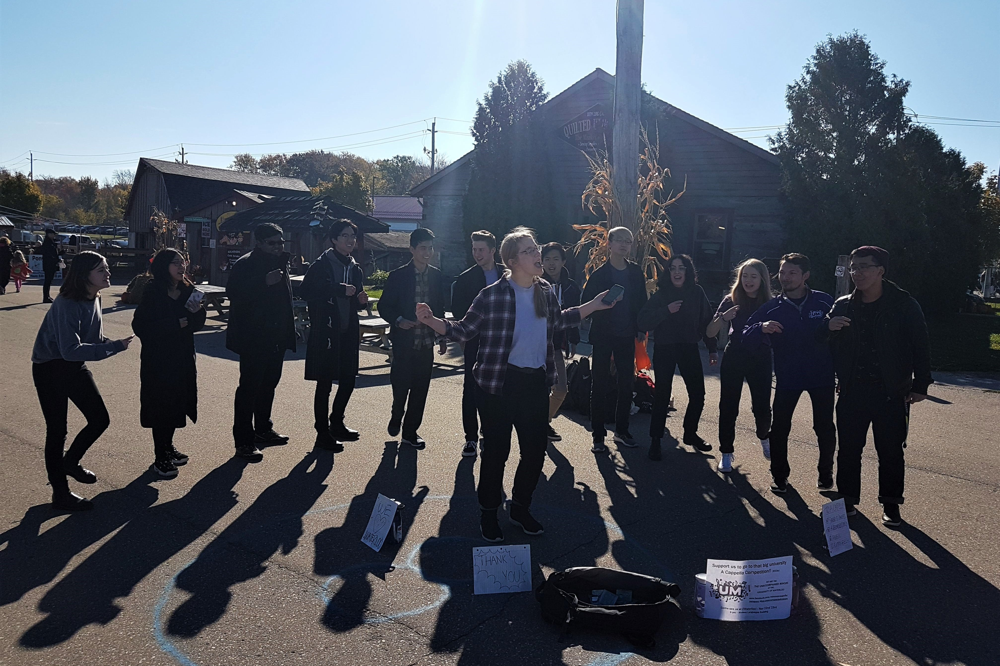
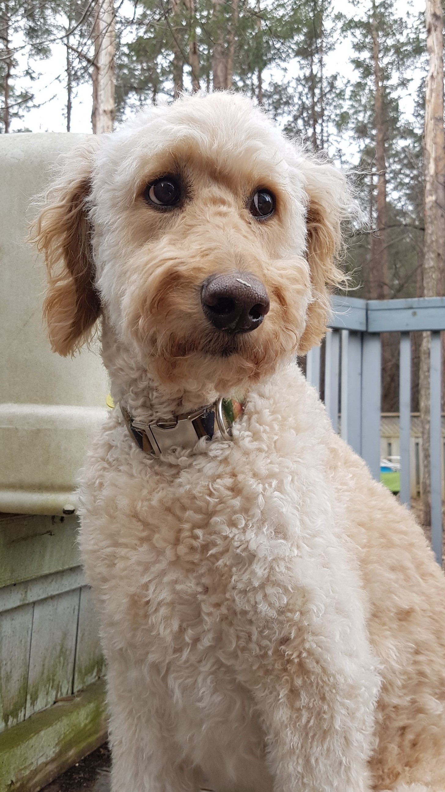
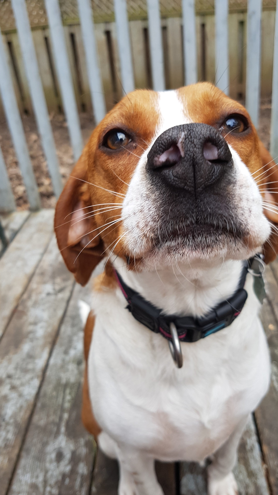
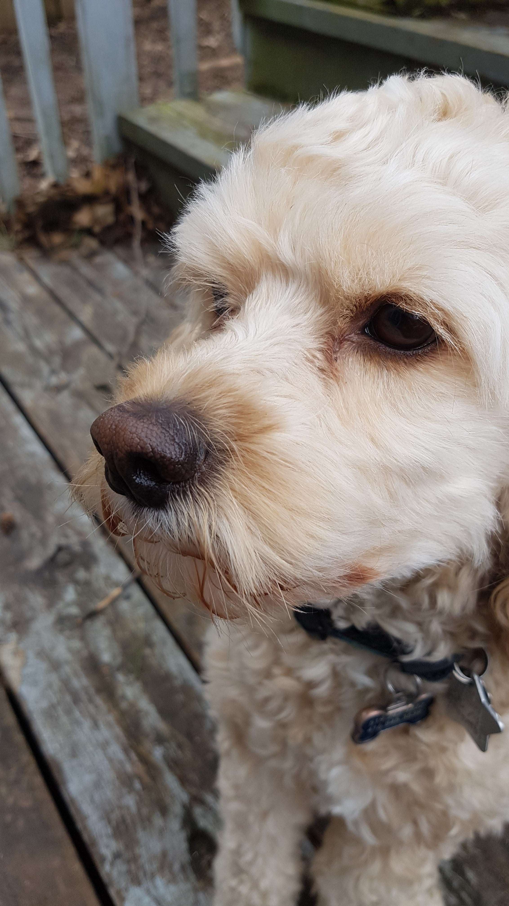

Hi! I'm Kim.
I’m a UI/UX designer and front-end developer hungry to solve problems, help people,
and learn cool stuff on a Fall 2020 internship.
Let's talk
about what we can build together! Scroll down to check out my experience, past work, and skills,
or check out my
resume.

Experience
DevOps and QA Lead
Avidbots | Jan - Apr 2020
UX Research
PlanGrid | May - Aug 2019
UX Research
CIBC | Sep - Dec 2018
Training Development
Enable Education | Jan - Apr 2018
Counsellor
Camp Scugog | Jul 2016 - Aug 2018
Grader
Kumon | Nov 2015 - Jun 2017
This past term, I joined the web team at Avidbots and learned a lot while also making a big impact:
- Streamlined environment configuration process, decreasing manual steps from 22 to 8
- Sped up unit tests more than 200% using parallelization, new libraries, CSS techniques
- Further improved dev experience and code functionality by configuring cross-origin access, updating Angular versions
- Uncovered numerous bugs; played major role coordinating with developers and product managers to ensure prompt resolution
- Took initiative to improve the site by fixing bugs and deficiencies firsthand
- Led successful two-week sprint as Agile scrum master and meeting director
In 2019, I headed to San Francisco to join the Design organization at PlanGrid, where I:
- Headed major user research studies that heavily informed design/product decisions
- Developed project plans, led interviews/concept tests, built personas and concept maps
- Generated actionable findings by consolidating primary and secondary research, data analysis ( Looker, Amplitude)
- Achieved stakeholder buy-in with compelling reports and presentations
- Expedited front-end accessibility compliance with new review system for designers + devs


In my first UX-focused position, I made a splash at the CIBC digital banking department:
- Improved design through insights from usability tests, interviews, surveys, first-click tests, and more
- Synthesized data and delivered concise recommendations in stakeholder reports and presentations
- Collaborated effortlessly with diverse teams, leading dynamic sprint workshops (e.g. research alignment, personas)
- Established use cases for new products through market research, quantitative analysis (Tableau, Excel)
After just one term of school, I landed my first coop position!
- Produced interactive courseware and lab activities for 3+ university-level electronics courses, delivered to multinational clients such as National Instruments
- Collaboratively generated creative multimedia teaching aids for engineering and coding
- Tailored content using HTML5 to match clients' brand standards and streamline design
- ADD A PICTURE
Overnight camp is a fast-paced environment where the days are long, the possibilities are endless, and the staff work hard:
- Took initiative to lead new activities, address issues, improve everyday processes
- Managed 7 campers with unique needs through prompt critical thinking, confident decision-making, and empathetic communication
- Ensured accountability and camper success through close partnership with fellow staff, parents

As a grader at a Kumon tutoring centre, I multi-tasked, juggled competing priorities, and ultimately:
- Improved student understanding of math and English through targeted verbal/written feedback
- Graded student work accurately, rapidly, and neatly with a keen eye for detail
Projects
Life
MusicI love to sing, play the flute, and write original songs! I'm also part of the Unaccompanied Minors, a competitive a cappella group. I've even served multiple terms as the group's President, during which I doubled event attendance and revamped cumbersome admin processes. |
 |
ArtHand in hand with my love for design is a love for visual art; it's a way to de-stress, to capture to the world, and to show appreciation for loved ones. Check out my work on Instagram: |
|
Etc.I keep active by jogging and by walking the family dogs: Boo, Lucie, and Franklin.
|
   |
Skills
Dev |
Frontend development HTML • CSS • JavaScript • Typescript • Angular • Material • i18n Object-oriented programming C/C++ • Python Scrum leadership Agile • JIRA • Confluence |
UX/UI Design + Research |
UX/UI design Iterative, systems-based design process User research User interviews • Usability testing • Concept testing • Qual/quant data analysis • Looker • Tableau Wireframing Figma • InVision | Graphic design Design communication Design workshops • Personas • Concept Maps • Report creation and presentation • Initiative planning |
DevOps |
Environment management Shell scripting • Docker • Kubernetes CI unit testing Karma • Jasmine QA + regression testing | CORS |
Electro-mechanical |
Analog + digital circuit design Signal processing + filtering • Arduino • Breadboarding • MIPS 3D design + technical drafting SolidWorks • AutoCAD • 3D Printing |
Let's talk!
Ready to do great things together? Shoot me en email!
You can also check out my work below, or view my resume
here.